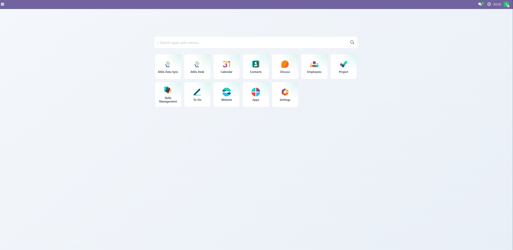
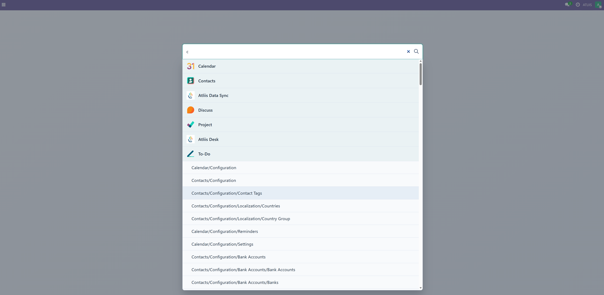
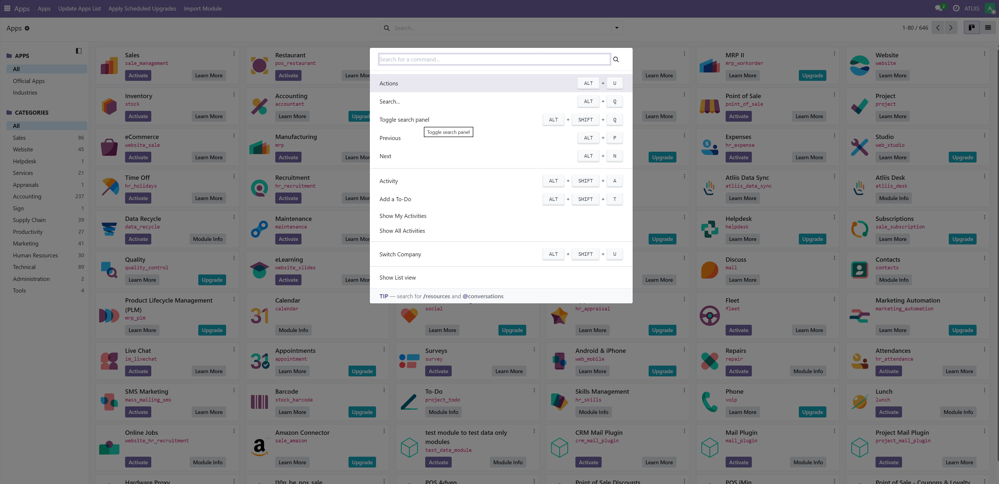
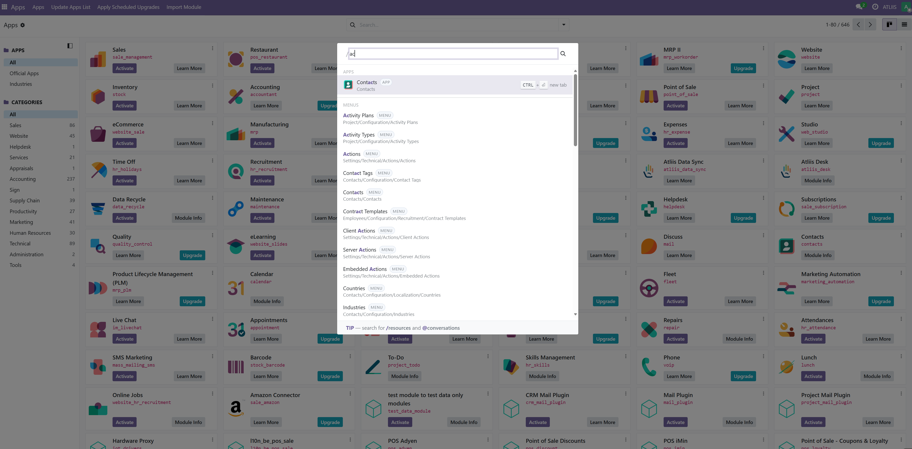

Atliis Apps Launcher
Launcher Dashboard + Command Palette for Odoo Community
A clean home dashboard and an Enterprise-style command palette for Odoo Community users. Search, launch, and switch context in seconds — without leaving the keyboard.
/odoo/home
Ctrl+K
Everything you need to navigate Odoo faster
A dedicated home dashboard with drag-and-drop app ordering and a global command palette that puts every app, menu, and action one keystroke away.
Dedicated Home Dashboard
A dedicated route at /odoo/home provides a clean, search-first app launcher as your starting point.
Drag-and-Drop App Ordering
Users can reorder app tiles by dragging and dropping to match their personal workflow priorities.
Command Palette with Ctrl+K
Press Ctrl+K anywhere in the backend to open a global command palette — search apps, menus, and actions instantly.
Search Across Everything
Search covers Apps, Menus, and Actions in one place. Results respect current user permissions — users only see what they can access.
Slash Command Filters
Type /apps, /menus, /actions, or /settings to filter results by category.
Optimized for Performance
Debounced queries and limited result sets ensure the palette stays fast and responsive even in large Odoo deployments.
Enterprise-style navigation for Odoo Community
Odoo Enterprise has a command palette built in. Now your Community users get the same experience — faster onboarding, fewer clicks, and keyboard-first workflows.
Faster Onboarding
New users get a clean, focused first screen instead of a cluttered menu bar — reducing the learning curve significantly.
Reduced Click Depth
Reach any app or menu in one keystroke instead of navigating through multiple levels of menus.
Keyboard-Driven Workflow
Power users get a consistent keyboard-first experience that matches modern productivity tools they already know.
Focused Search
Slash command filters narrow results by type so users find exactly what they need without browsing.
Dashboard and palette workflow
Follow these steps to open the launcher, search and launch apps, use the command palette, and apply slash command filters.
Open the Launcher Dashboard
Click the Apps or Home icon in the top bar to open the launcher dashboard at
/odoo/home.
All your installed apps appear as searchable tiles.
The dashboard shows only the apps accessible to the current user based on their permissions.

Search and Launch
Type in the search box to instantly filter apps and menus. Click any result or press
Enter
to navigate directly — no browsing required.
Results update in real time as you type, filtered to only what the current user has permission to access.

Open the Command Palette
Press Ctrl+K from anywhere in the Odoo backend to open the global command palette.
Use arrow keys to navigate results and Enter to open.
Press Esc to close the palette and return to the current view.

Use Slash Commands to Filter
Type /apps,
/menus,
/actions, or
/settings
in the palette to restrict results to a specific category for precise navigation.
Combine a slash filter with a search term — for example /menus invoice — to narrow results instantly.

Keyboard Shortcuts
Open Command Palette
Open the global command palette from anywhere in the backend.
Navigate Results
Move up and down through search results without touching the mouse.
Open Selected
Navigate directly to the highlighted result.
Close Palette
Close the search overlay and return to the current view.
Install and configure
Install the module, restart Odoo, and the launcher dashboard and command palette are ready immediately — no configuration required.
1. Add the module
Copy atliis_app_launcher into your Odoo addons path.
2. Restart Odoo
Restart the Odoo server to pick up the new module.
3. Update Apps
Update the app list from the Apps menu with developer mode enabled.
4. Install
Install Atliis Apps Launcher and hard-reload the browser if needed.
Common questions
Does it replace native Odoo apps?
No. It enhances access and navigation on top of your existing apps without replacing or removing anything.
Will users only see what they can access?
Yes. Search results follow current user permissions and visibility rules. Users never see apps or menus they don't have access to.
Which Odoo versions are supported?
Odoo 18 and Odoo 19 Community. It works with the standard web client architecture and OWL stack.
Can this be customised for branding?
Yes. The launcher UI can be extended to match your brand colours and workflow requirements.
Does it work with multi-company setups?
Yes. It is designed to coexist with standard business modules and multi-company environments, standardising navigation across all users.
Is there a performance impact on large deployments?
No. Search queries are debounced and result sets are limited, keeping the palette fast and responsive even in large Odoo installations.
I need customisation in this module. How can I request it?
Please contact us at helpdesk@atliis.com to request customisation.
Do I get free support?
Yes, we provide 90 days free support from the date of purchase.